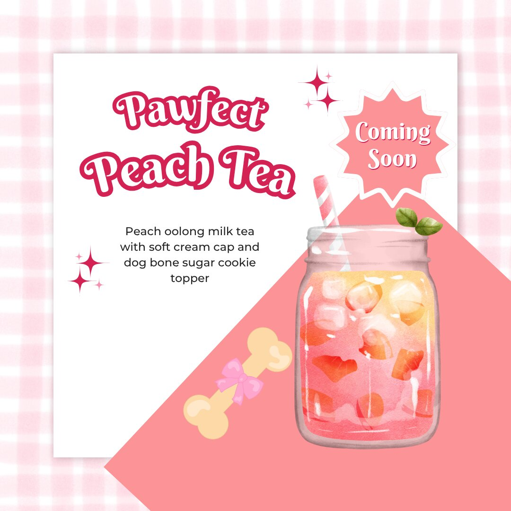
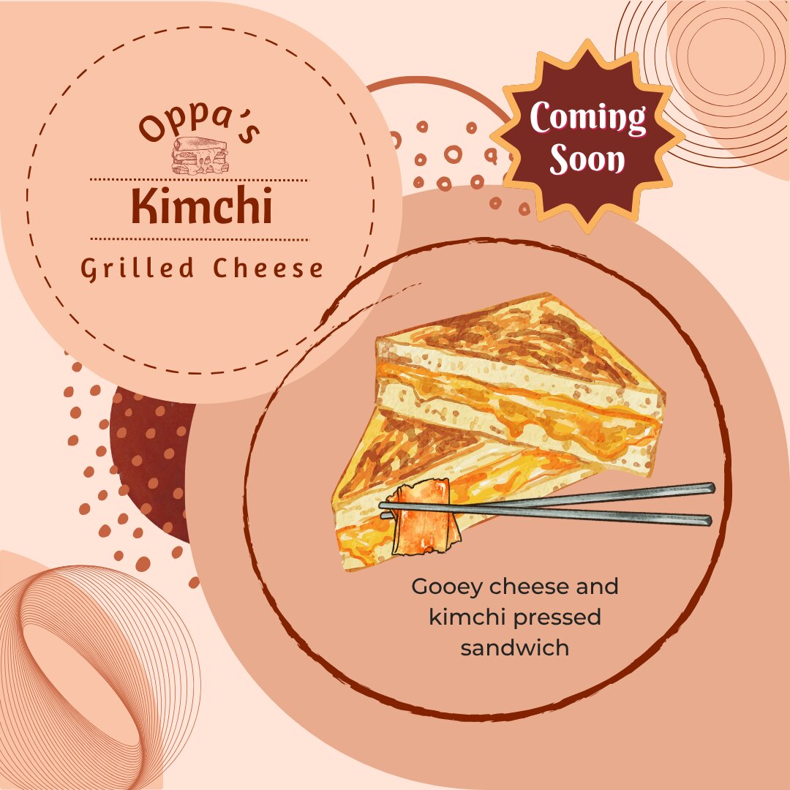
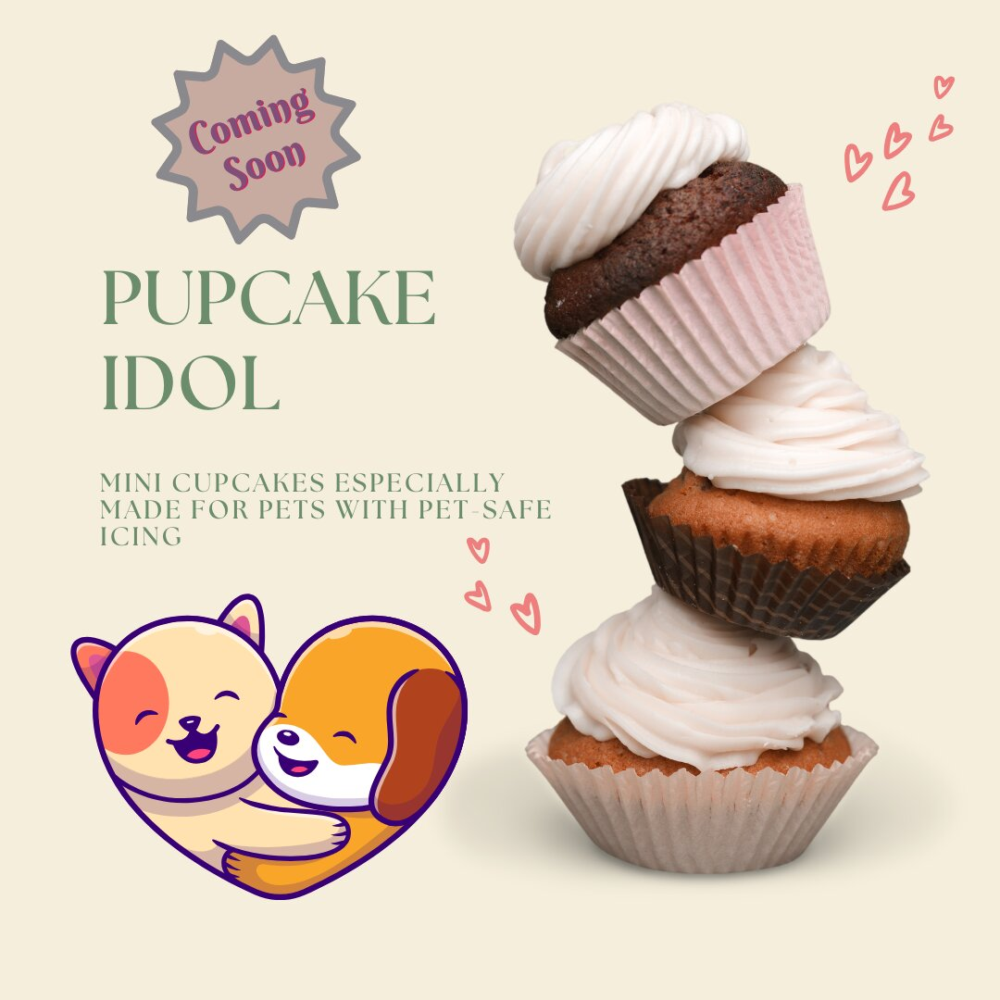

CONCEPT WORK
K-Pawp Universe
A social-first motion extension of the K-Pawp brand world.
DESIGN · BRANDING · MOTION · VISUAL STORYTELLING
Designing for clarity, personality, and experience.
Selected work spanning branding, campaign creative, social media design, information design, motion, and visual storytelling across professional, founder-led, academic, and concept projects.
OVERVIEW
My approach to visual design starts with the purpose of the piece: what someone needs to notice, understand, feel, or do.
Depending on the project, that might mean creating a recognizable brand identity, simplifying complex information, making an event feel exciting, developing social-first creative, or using motion to guide attention.
I work across both strategic and hands-on creative execution, connecting visual decisions with audience, brand, and communication goals.
CAPABILITIES
Identity systems, logos, visual direction, brand personality, and campaign consistency.
Social graphics, promotional assets, event collateral, signage, and multi-format creative.
Menus, guides, educational content, hierarchy, readability, and customer-facing communications.
Short-form video, transitions, pacing, sequencing, visual rhythm, and mobile-first storytelling.
01 · BRAND IDENTITY
Developed a visual identity that could extend across menus, promotional materials, loyalty programs, signage, and other customer-facing touchpoints.
Built a relocation brand around the concept of belonging, warmth, and connection, translating the positioning into a clean visual system and digital presence.
02 · CAMPAIGN CREATIVE
Campaigns often required multiple assets designed for different placements and stages of the customer experience.
I adapted creative to social media, posters, table signage, menus, digital displays, and physical activations while maintaining a recognizable campaign identity.


03 · INFORMATION DESIGN
Some projects required less visual spectacle and more disciplined hierarchy, organization, and clarity.
Design information so audiences can quickly understand what matters, find what they need, and act with confidence.


04 · AI-ASSISTED CREATIVE
Developed an original social-first concept and used generative AI as part of the visual asset-production process.
The work required concept development, product ideas, visual direction, output selection, refinement, typography, layout, copy, and final social execution.



05 · MOTION & VIDEO
Video adds timing, rhythm, sequencing, transitions, audio, and movement to the design process.
Academic and concept work gave me space to explore mobile-first composition and motion outside the constraints of traditional campaign design.
CONCEPT WORK
A social-first motion extension of the K-Pawp brand world.
VISUAL DESIGN
Exploring composition, sequencing, timing, and transitions.
VISUAL DESIGN
Exploring rhythm, layering, movement, and visual emphasis.
DESIGN PRINCIPLES
Understand what the design needs to communicate or achieve.
Design for the people using or experiencing the work.
Make the most important information easiest to understand.
Build recognizable systems without making every asset identical.
Design for the real environment where the work will appear.
Refine until the creative solution supports the objective.